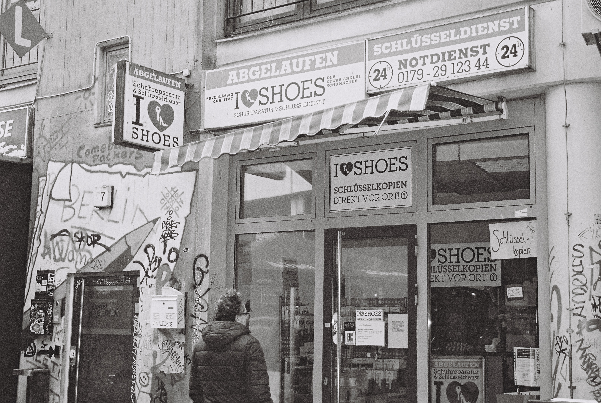
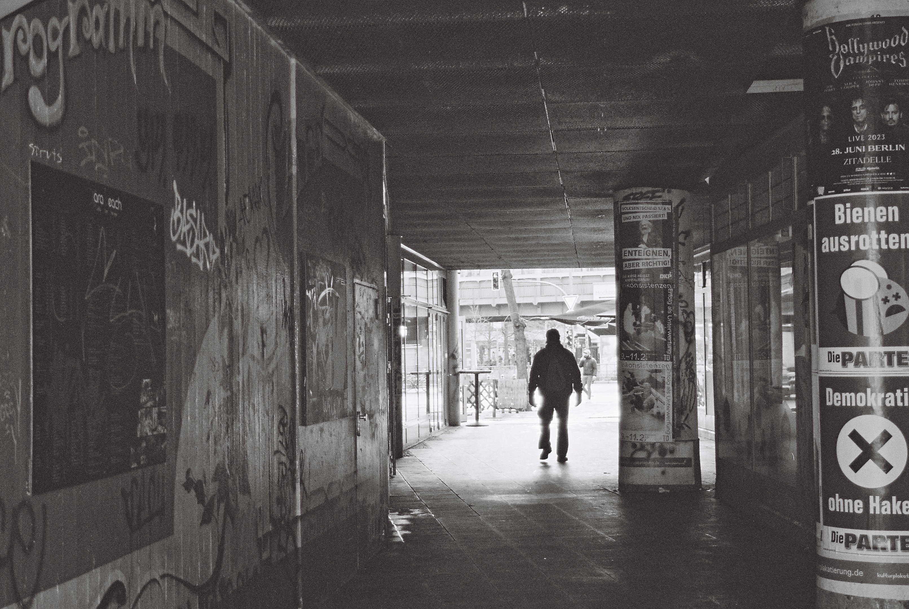
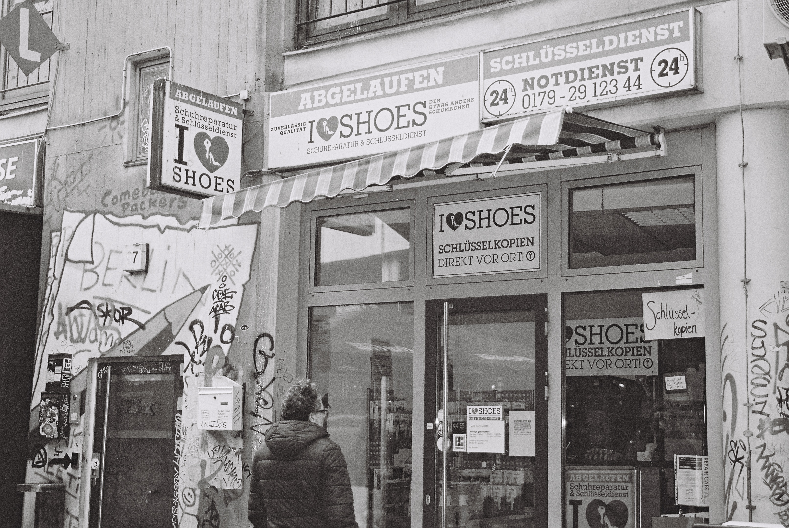
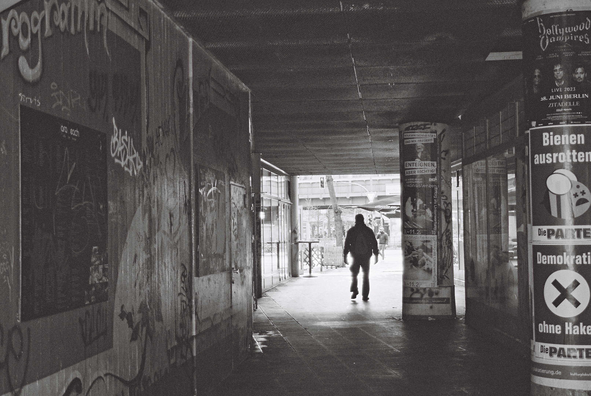

Kreuzberg
A neighbourhood in the South-East of the city, adjacent to Kreuzberg, sharing borders with Alt-Treptow, Plänterwald and Tempelhof
Kottbusser Tor, Jannowitz Brucke
Treptower Park, Sonnenallee, S+U Neukölln
A neighbourhood in the South-East of the city, adjacent to Kreuzberg, sharing borders with Alt-Treptow, Plänterwald and Tempelhof
Kottbusser Tor, Jannowitz Brucke
Treptower Park, Sonnenallee, S+U Neukölln
Kreuzberg is located in the central-east part of Berlin, neighboring
with Mitte, Friedrichshain and Neukölln districts. After the Berlin Wall
was erected, Kreuzberg became part of West Berlin surrounded by the Wall
from three sides. Since the living standards and the location were not
very attractive, the district became popular among immigrants, artists,
and students who created a peculiar mix that influenced the atmosphere
of the place.
Today, Kreuzberg is one of the most popular and expensive places to live
due to hyper-gentrification of the recent years!
 


